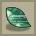
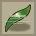
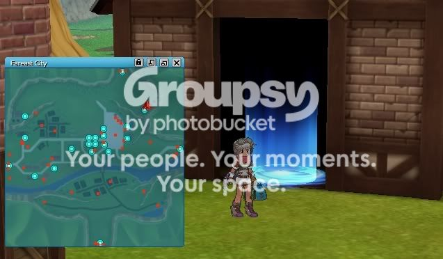

เห็ด Strange Mushroom เพิ่งจะเคยเจอะที่โมโม มีข้อมูลเกี่ยวกะมันมั้งมั้ยอ่า
เช่นเอาไปทำไรบ้าง ฯลฯ
เช่นเอาไปทำไรบ้าง ฯลฯ
http://eco.froztic.in.th/archive/ecofanclub/
http://eco.froztic.in.th/archive/ecofanclub/viewtopic.php?f=27&t=54621
อายะกะ เขียน:เห็ด Strange Mushroom เพิ่งจะเคยเจอะที่โมโม มีข้อมูลเกี่ยวกะมันมั้งมั้ยอ่า
เช่นเอาไปทำไรบ้าง ฯลฯ


MalMal2U เขียน:ทำวัว ครับ
://board.onenet.co.th/viewtopic.php?t=4916
เติม http ข้างหน้านะผมยังโพส url ไม่ได้


Reel Grass หาได้จาก Grass พบได้เยอะในแมพ Momo Plain
Rune Grass หาได้จาก Wild Boar , Monk Eko , Grass พบได้เยอะในแมพ Momo Plain
Lock เขียน:จะถ่ายรูปหน้าจอเดสทอปธรรมดาทำไงอะครับ

Aouli เขียน:Lock เขียน:จะถ่ายรูปหน้าจอเดสทอปธรรมดาทำไงอะครับ
กด Printscreen
เปิด Paint
แปะ paste
save